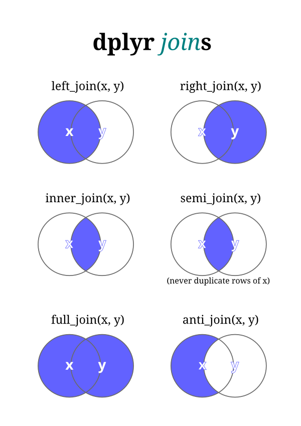

Basic plotting and statistics
Long and Wide Data Formats
Long and wide data formats are two common ways of structuring data, each with its own advantages and use cases.
Long Format
In the long format, also known as the “tidy” format, each observation is represented by a single row in the dataset. This format is characterized by having:
- Multiple rows, each corresponding to a single observation or measurement.
- One column for the variable being measured.
- Additional columns to store metadata or grouping variables.
Advantages:
- Facilitates easy analysis and manipulation, especially when using tools like Tidyverse packages in R.
- Suitable for data that follow the “one observation per row” principle, such as time series or longitudinal data.
Wide Format
In the wide format, each observation is represented by a single row, but with multiple columns corresponding to different variables. This format is characterized by:
- One row per observation.
- Each variable is represented by a separate column.
Advantages:
- Can be easier to understand for simple datasets with few variables.
- May be more convenient for certain types of analysis or visualization.
Choosing Between Long and Wide Formats
The choice between long and wide formats depends on factors such as the nature of the data, the analysis tasks, and personal preference. Long format is often preferred for its flexibility and compatibility with modern data analysis tools, while wide format may be suitable for simpler datasets or specific analysis requirements.
Long to Wide
library(tidyr)
# Example long format data
long_data <- data.frame(
Subject = c("A", "A", "B", "B"),
Time = c(1, 2, 1, 2),
Measurement = c(10, 15, 12, 18)
)
# Convert long format data to wide format
wide_data <- spread(long_data, key = Time, value = Measurement)
# View the wide format data
print(wide_data)Wide to Long
library(tidyr)
# Example wide format data
wide_data <- data.frame(
Subject = c("A", "B"),
Time1 = c(10, 12),
Time2 = c(15, 18)
)
# Convert wide format data to long format
long_data <- gather(wide_data, key = Time, value = Measurement, -Subject)
# View the long format data
print(long_data)Merging Data
Merging allows combining data from different sources. This is common in analyzing biological data.
Joins and Merging of Data in Tidyverse
Joins and merging are common operations used to combine multiple datasets based on common variables or keys. In Tidyverse, these operations are typically performed using functions from the dplyr package.
Types of Joins:

Inner Join (inner_join()):
An inner join combines rows from two datasets where there is a match based on a common key, retaining only the rows with matching keys from both datasets.
Left Join (left_join()):
A left join combines all rows from the first (left) dataset with matching rows from the second (right) dataset based on a common key. If there is no match in the second dataset, missing values are filled in.
Right Join (right_join()):
Similar to a left join, but it retains all rows from the second (right) dataset and fills in missing values for non-matching rows from the first (left) dataset.
Full Join (full_join()):
A full join combines all rows from both datasets, filling in missing values where there are no matches.
Semi-Join (semi_join()):
A semi-join returns only rows from the first dataset where there are matching rows in the second dataset, based on a common key.
Anti-Join (anti_join()):
An anti-join returns only rows from the first dataset that do not have matching rows in the second dataset, based on a common key.
Merging Data:
Merge (merge()):
The merge() function is a base R function used to merge datasets based on common columns or keys. It performs similar operations to joins in dplyr, but with slightly different syntax and behavior.
Example:
library(dplyr)
# Example datasets
df1 <- data.frame(ID = c(1, 2, 3), Name = c("Alice", "Bob", "Charlie"))
df2 <- data.frame(ID = c(2, 3, 4), Score = c(85, 90, 95))
# Inner join
inner_merged <- inner_join(df1, df2, by = "ID")
# Left join
left_merged <- left_join(df1, df2, by = "ID")
# Right join
right_merged <- right_join(df1, df2, by = "ID")
# Full join
full_merged <- full_join(df1, df2, by = "ID")
# Semi-join
semi_merged <- semi_join(df1, df2, by = "ID")
# Anti-join
anti_merged <- anti_join(df1, df2, by = "ID")Plotting
ggplot2
The core idea behind ggplot2 is the concept of a “grammar of graphics”. This concept provides a systematic way to describe and build graphical presentations such as charts and plots. The grammar itself is a set of independent components that can be composed in many different ways. This grammar includes elements like:
- Data: The raw data that you want to visualize.
- Aesthetics (
aes): Defines how data are mapped to color, size, shape, and other visual properties. - Geometries (
geom): The geometric objects in a plot—lines, points, bars, etc. - Scales: Transformations applied to data before it is visualized, including scales for colors, sizes, and shapes.
- Coordinate systems: The space in which data is plotted.
- Facets: Used for creating plots with multiple panels (small multiple plots).
- Statistical transformations (stat): Summary statistics that can be applied to data before it is visualized, such as counting or averaging.
- Themes: Visual styles and layout configurations for the plot.
Here’s how you generally use ggplot2 to create a plot:
- Start with
ggplot(): Set up the data and, optionally, define default mappings between variables and their aesthetics. - Add layers: Add layers to the plot using geom_ functions, such as
geom_point()for scatter plots,geom_line()for line graphs, and so on.
- Adjust the scales: Customize the scales used for aesthetics such as color, size, and x-y coordinates.
- Modify the coordinate system: Choose a coordinate system.
- Add facets: If necessary, add facets to create a multi-panel plot.
- Apply a theme: Customize the appearance of the plot using themes.
library(ggplot2)
# Sample data
df <- data.frame(
x = rnorm(100),
y = rnorm(100),
group = factor(rep(1:2, each = 50))
)
# Creating a scatter plot
ggplot(df, aes(x = x, y = y, color = group)) +
geom_point() +
theme_minimal() +
labs(title = "Scatter Plot Example", x = "X Axis", y = "Y Axis")Histogram
Let’s simulate some TCR clonotype data. We will create a dataset where each TCR has a randomly generated number of cells associated with it, representing the clone size. After generating the data, we’ll use the hist() function from base R to plot a histogram of the clone sizes.
library(dplyr)
# Step 1: Simulate data
set.seed(123) # Set seed for reproducibility
num_clonotypes <- 100 # Specify the number of different clonotypes
# Create a data frame with random cell counts for each clonotype
tcr_data <- tibble(
clonotype = paste("TCR", seq_len(num_clonotypes), sep=""),
cell_count = sample(1:1000, num_clonotypes, replace=TRUE) # Random cell counts between 1 and 1000
)
# Step 2: Create a histogram of clone sizes
hist(tcr_data$cell_count,
breaks=20, # You can adjust the number of breaks to change bin sizes
col="skyblue",
main="Histogram of TCR Clone Sizes",
xlab="Clone Size (Number of Cells)",
ylab="Frequency")We can perform the same task using ggplot2:
library(ggplot2)
library(dplyr)
# Step 1: Simulate data
set.seed(123) # Set seed for reproducibility
num_clonotypes <- 100 # Specify the number of different clonotypes
# Create a data frame with random cell counts for each clonotype
tcr_data <- tibble(
clonotype = paste("TCR", seq_len(num_clonotypes), sep=""),
cell_count = sample(1:1000, num_clonotypes, replace=TRUE) # Random cell counts between 1 and 1000
)
# Step 2: Create a histogram using ggplot2
ggplot(tcr_data, aes(x = cell_count)) +
geom_histogram(bins = 20, fill = "skyblue", color = "black") +
theme_minimal() +
labs(
title = "Histogram of TCR Clone Sizes",
x = "Clone Size (Number of Cells)",
y = "Frequency"
) +
theme(
plot.title = element_text(hjust = 0.5) # Center the plot title
)Boxplot
Let’s simulate some gene expression data for key CD8 T cell genes.
library(tidyverse)
library(MASS) # For negative binomial simulation
# Define genes and number of cells
genes <- c("GZMB", "GZMA", "GNLY", "PRF1", "TOX", "ENTPD1", "LAG3", "TIGIT", "HAVCR2", "TIGIT", "CXCL13", "IL7R", "SELL", "LEF1", "TCF7")
num_cells <- 20
# Parameters for negative binomial
size <- 2 # Dispersion parameter
mu_pre <- 20 # Mean for pre-treatment
mu_post <- 30 # Mean for post-treatment
# Simulate gene expression data
set.seed(42)
pre_treatment <- sapply(rep(mu_pre, length(genes)), function(mu) rnbinom(num_cells, size, mu = mu))
post_treatment <- sapply(rep(mu_post, length(genes)), function(mu) rnbinom(num_cells, size, mu = mu))
# Format as data frame
pre_data <- as_tibble(pre_treatment, .name_repair = "minimal") %>%
mutate(Treatment = "Pre") %>%
pivot_longer(cols = -Treatment, names_to = "Gene", values_to = "Expression", names_prefix = "V")
post_data <- as_tibble(post_treatment, .name_repair = "minimal") %>%
mutate(Treatment = "Post") %>%
pivot_longer(cols = -Treatment, names_to = "Gene", values_to = "Expression", names_prefix = "V")
# Combine the datasets
combined_data <- bind_rows(pre_data, post_data)Now let’s use this data to build a boxplot of TOX expression pre and post treatment.
# Filter data for the TOX gene
tox_data <- combined_data %>%
filter(Gene == "TOX")
# Plot
ggplot(tox_data, aes(x=Treatment, y=Expression, fill=Treatment)) +
geom_boxplot() +
labs(title="Expression of TOX pre and post treatment", x="Treatment Condition", y="Expression Level") +
theme_minimal() +
scale_fill_brewer(palette="Pastel1") # Enhance aesthetics with colorViolin plot
Same thing a violin plot.
library(ggplot2)
# Filter data for the TOX gene
tox_data <- combined_data %>%
filter(Gene == "TOX")
# Create the violin plot
ggplot(tox_data, aes(x=Treatment, y=Expression, fill=Treatment)) +
geom_violin(trim=FALSE) + # Trim set to FALSE to show the full range of data
labs(title="Expression of TOX pre and post treatment", x="Treatment Condition", y="Expression Level") +
theme_minimal() +
scale_fill_brewer(palette="Pastel1") +
geom_boxplot(width=0.1, fill="white") # Overlay boxplot to show median and quartilesStatistics
t-Test
A t-test could be used to compare the means of two groups, for example, the level of a specific immune marker in patients with and without a certain mutation.
R
Copy code
# Randomly generated sample data: Immune marker levels in two patient groups
group1 <- rnorm(30, mean = 5, sd = 1.5) # Patients with a mutation
group2 <- rnorm(30, mean = 4.5, sd = 1.2) # Patients without the mutation
# Perform a t-test
test <- t.test(group1, group2)
# Print the result
print(test)Fisher’s Exact Test
Assume you’ve identified a TCR clonotype and quantified the number of cells expressing this clonotype at two timepoints:
- Timepoint 1 (Pre-treatment):
Xnumber of cells - Timepoint 2 (Post-treatment):
Ynumber of cells
You also need the total number of cells sequenced at each timepoint to complete the contingency table for the Fisher’s Exact Test. Let’s say:
- Total cells at Timepoint 1:
N_pre - Total cells at Timepoint 2:
N_post
# Number of cells with the specific clonotype at each timepoint
cells_with_clone <- c(X, Y)
# Number of cells without the clonotype (total cells minus cells with the clonotype)
cells_without_clone <- c(N_pre - X, N_post - Y)
# Create the contingency table
data <- matrix(c(cells_with_clone, cells_without_clone), ncol = 2,
dimnames = list(c("With Clone", "Without Clone"),
c("Pre-Treatment", "Post-Treatment")))
# Perform Fisher's Exact Test
test <- fisher.test(data)
# Print the result
print(test)- The matrix data has two rows (“With Clone” and “Without Clone”) and two columns (“Pre-Treatment” and “Post-Treatment”). This matrix is filled with the counts of cells with and without the specific TCR clonotype at each timepoint.
fisher.test(data)calculates whether the proportions of cells with the clonotype are significantly different between the two timepoints.- The output includes a p-value which indicates the probability that any observed difference in proportions occurred by chance.